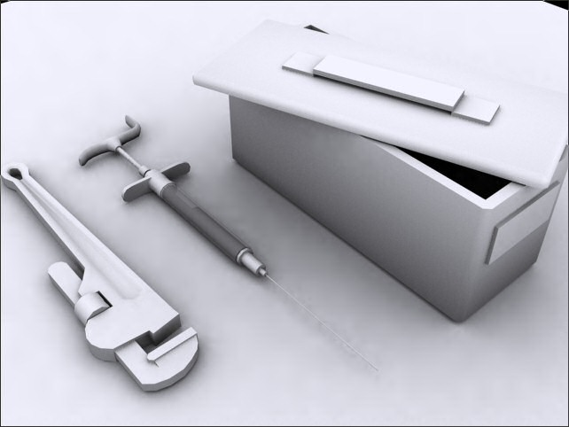
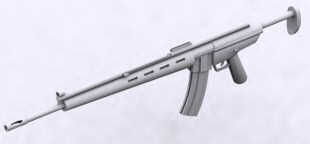
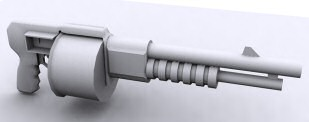
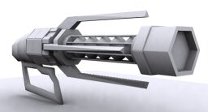

Weapons
Latest
Render

Man
Powered
Compared
to their mechanical and electronic bretheren, these weapons suffer from
limited strength and/or range, but they are light (if weight becomes a
factor in the game), stealthy, cheap, and overall good first slot
weapons.
Knife
War
Blade
Sword
Sunfire
Pod
Boomerang
Razor
Wind
Bow
Tek
Bow
Bullet
Conventional
slug throwers will be the most comfortable to the general FPSer.
Quick firing with reasonable pricing and an abundance of ammo.
Pistol
Mag
60

Assault
Rifle (Turok 1)
This the standard infantry weapon with good range
and accuracy. It's not as flashy as the other weapons but it is ideal
for quick takedowns at a distance. It has a 30 round magaizine and can
be fired in either single shot or full auto mode.
Shotgun

Automatic
Shotgun (Turok 1)
A Streetsweeper shotgun model specially
modified for gas-operated automatic fire. The 16 round drum
magazine can be emptied in a matter of seconds, but that severly
effects the recoil. These factors make it best suited for close range
crowded battles. It too can fire explosive slugs.
Shredder
MiniGun
Tranquilizer
Gun
Energy
Energy
and chemical based weaponry offers things a little more fancy on the
battlefield. Energy bolts are more damaging than bullets and don't fall
from gravity. However the
bolts are easily visible, they
consume more ammo with each shot, and have less impact force.
Pulse
Rifle
Alien
Weapon

Particle
Accelerator (Turok 1)
It's the handheld atom smasher! Charging the weapon
will draw from the energy cell and spin up the particles. Release the
trigger to send the particles spiraling to break down the atomic
structure of your opponent. Charging it up more will consume ammo but
will make more powerful shots. Maintaining a full charge will still
consume small amounts of ammo.
Plasma
Rifle
Firestorm
Cannon
Charge
Dart Rifle
Flare
Gun
Freeze
Gun
Explosive
Achieve
burnination with the explosive weapons. Half made for indirect fire
against personnel and others made for anti-vehicular and
anti-structural use. These get more expensive and ammo is less
plentiful. Slow firing and not very accurate, these are more suited for
for setting traps and ambushes than a one on one brawl.
Grenade
Launcher
Quad
Rocket Launcher
Proximity
Fragmentation Mine Layer
Scorpion
Launcher
Flamethrower
Napalm
Gel
Cerebral
Bore
Doomsday
Weapons
The
most powerful weapons are also the most expensive. They generate many
kills in a large radius. This advantage is offset by the fact they come
with limited ammo, and are slow to fire. If you kill someone with a
doomsday weapon, it will detonate and damage people near him, though on
a lesser scale, though this means you won't be able to scavenge it.
Fusion
Cannon
Chronosceptor
Nuke
Personal
Singularity Generator